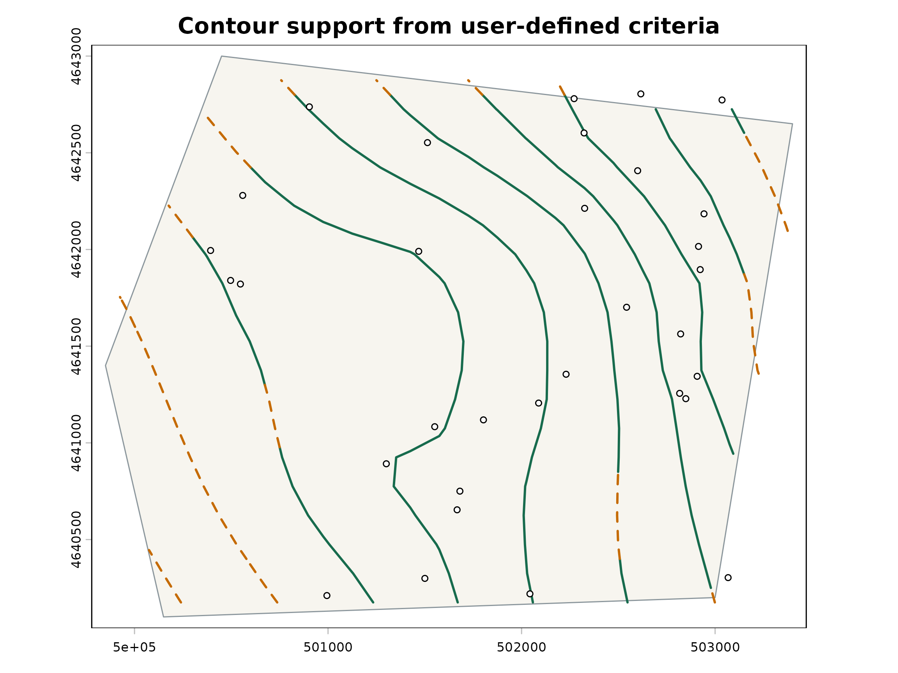

Contours and hydraulic-gradient arrows
contours-and-arrows.Rmd
library(potentiomap)
data("synthetic_wells")
points <- ps_make_points(
synthetic_wells, "x", "y", "gw_elevation", "well_id", "EPSG:26916"
)
surface <- ps_interpolate(points, methods = "IDW", grid_res = 300)$IDWThe default contour result is a line SpatVector. A
structured result adds an inventory of every requested level.
contours <- ps_contours(
surface, levels = c(166, 168, 170), return = "result"
)
contours$manifest
#> requested_level surface_minimum surface_maximum level_relation
#> 1 166 164.528 170.8319 within_surface_range
#> 2 168 164.528 170.8319 within_surface_range
#> 3 170 164.528 170.8319 within_surface_range
#> returned_status returned_feature_count omission_reason
#> 1 returned 1
#> 2 returned 1
#> 3 returned 1Explicit levels outside the finite surface range remain in the manifest and produce a classed warning. Open lines are not silently closed or converted to polygons.
Individual contour lines can be divided where local support changes.
support <- ps_prediction_support(points, surface = surface)
classified <- suppressWarnings(ps_contour_support(
contours$contours, support = support,
supported_distance = 500, approximate_distance = 1200,
require_inside_hull = TRUE
))
classified$summary
#> contour_level support_class segment_count total_line_length
#> 4 166 supported 1 1518.085
#> 1 166 approximate 2 2458.483
#> 5 168 supported 1 2701.971
#> 2 168 approximate 3 1272.686
#> 6 170 supported 1 2448.299
#> 3 170 approximate 3 3012.517
#> retained_line_length removed_line_length
#> 4 1518.085 0
#> 1 2458.483 0
#> 5 2701.971 0
#> 2 1272.686 0
#> 6 2448.299 0
#> 3 3012.517 0
plot(classified, show_unsupported = FALSE, legend_position = "topright")
terra::plot(points, add = TRUE, pch = 20)
The line_type field suggests solid, dashed, or dotted
symbology while keeping the support class and reason as GIS attributes.
The classes use thresholds chosen by the user, not confidence intervals.
Proximity to wells does not prove that a contour is correct, distance
does not prove that it is wrong, and every section remains an
interpolation from the modeled surface. Coarse support cells can shift
the apparent solid-to-dashed transition.
Hydraulic-gradient arrows point along the local negative modeled-head gradient. The following deliberately uses short, sparse display symbols.
flow <- ps_flow_arrows(
surface, scale = 25, res_factor = 10, endpoint_action = "shorten"
)
flow$validation_summary
#> endpoint_action arrows_generated arrows_retained finite_support downhill_pass
#> 1 shorten 1 1 1 1
#> failed shortened dropped
#> 1 0 0 0
head(flow$validation)
#> arrow_id base_x base_y tip_x tip_y base_head tip_head head_drop
#> x 1 501293.2 4641110 501380.4 4641188 169.6271 169.5799 0.04716736
#> finite_base finite_tip finite_support downhill_pass tolerance original_length
#> x TRUE TRUE TRUE TRUE 1e-06 116.678
#> final_length shortening_steps validation_status validation_reason
#> x 116.678 0 pass passendpoint_action = "flag" preserves failing lines and
reports them. "shorten" repeatedly halves their length
along the original direction. "drop" removes failures.
"none" retains the version 0.1.0 unvalidated geometry for
comparison. No policy reverses or bends an arrow.
Arrow length is a cartographic convention based on gradient, cell size, and the chosen scale. The line is not a velocity, travel time, particle path, or traced groundwater path. Endpoint checks only evaluate a straight symbol against the supplied raster; they do not prove that the interpolated surface is physically correct.